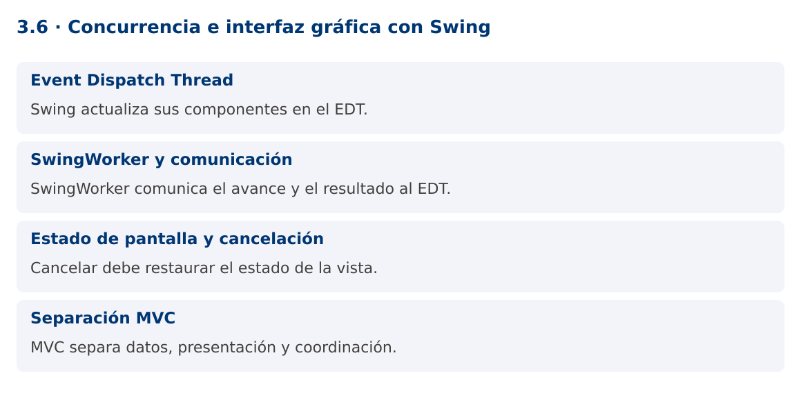

Programación Aplicada
3.6. Concurrencia e interfaz gráfica con Swing

Autor: Ing. Pablo Torres, Mgtr.
Unidad: 3. Programación concurrente
Proyecto de trabajo: CampusMonitor
Inicio del curso · Presentación editable · Ver en el navegador
1. Conceptos y ejemplos
Contexto
El monitor necesita mostrar el avance de una importación sin congelar la ventana. Swing forma parte del JDK y permite concentrarse en la regla de actualización de la interfaz y la separación entre trabajo y presentación.
Antes de empezar
Recupera el avance de 3.5. Conserva sus comandos y evidencias. Revisa el ejemplo completo antes de implementar la PC. Las demostraciones del material se ejecutan separadas del proyecto personal.
1.1. Event Dispatch Thread
Swing procesa eventos y actualizaciones de interfaz en el Event Dispatch Thread, EDT. Crea y modifica componentes Swing en ese hilo. Una tarea lenta ejecutada en un ActionListener bloquea otros eventos, incluido repintado y cierre aparente de la ventana.
SwingUtilities.invokeLater programa una operación breve en el EDT. No ejecuta trabajo pesado en segundo plano. Las operaciones de disco, base de datos o recepción serial deben realizarse fuera del EDT y comunicar resultados mediante mecanismos adecuados. También evita llamadas bloqueantes como get o join dentro del EDT salvo que el resultado ya esté disponible.
1.2. SwingWorker y comunicación
SwingWorker<T,V> separa doInBackground, que ejecuta trabajo fuera del EDT, de process y done, que se ejecutan en el EDT. publish envía avances que pueden agruparse antes de llegar a process. No supongas que cada publish genera una llamada inmediata e individual.
done se ejecuta al terminar, también cuando hay cancelación o error. get dentro de done permite recuperar el resultado o la causa, porque la tarea ya finalizó. Maneja CancellationException, ExecutionException e InterruptedException de forma diferenciada. Los mensajes al usuario deben indicar el estado real de la operación.
1.3. Estado de pantalla y cancelación
Mientras se ejecuta una tarea, deshabilita el botón que iniciaría otra copia incompatible y habilita la cancelación si procede. Al terminar, restaura controles en una ruta común. El cierre de la ventana debe cancelar tareas y liberar recursos, especialmente si después se agregan conexiones seriales o JDBC.
cancel(true) solicita interrupción. doInBackground debe consultar isCancelled y responder a InterruptedException. Una barra al cien por ciento no equivale a datos persistidos si la transacción todavía no se confirmó. Usa etiquetas como procesadas o guardadas según la etapa representada.
1.4. Separación MVC
El modelo mantiene sensores y lecturas, la vista presenta controles y el controlador interpreta acciones. La lógica del parser o repositorio no debería depender de JLabel ni JOptionPane. Esta separación permite ejecutar los mismos casos desde consola y desde interfaz.
La demostración incluye un modo --self-test para verificar el cálculo sin pantalla y un modo gráfico para inspeccionar respuesta y cancelación. La prueba sin pantalla no sustituye la revisión visual. Para una aplicación real, el servicio de importación debe devolver resultados estructurados y la vista decidir cómo mostrarlos.
Mapa de conceptos

2. Demostración guiada
2.1. Problema y contrato
El monitor necesita mostrar el avance de una importación sin congelar la ventana. Swing forma parte del JDK y permite concentrarse en la regla de actualización de la interfaz y la separación entre trabajo y presentación.
La implementación siguiente es una demostración resuelta. La PC de la sección 3 requiere desarrollar una ampliación propia sobre CampusMonitor.
Archivo completo: SwingDemo.java.
package edu.ups.pap.u03;
import javax.swing.*;
import java.awt.*;
import java.awt.event.*;
import java.util.List;
import java.util.concurrent.*;
public class SwingDemo {
static int calcular() { return java.util.stream.IntStream.rangeClosed(1,10).sum(); }
public static void main(String[] args) {
if (args.length>0 && args[0].equals("--self-test")) {
if (calcular()!=55) throw new AssertionError();
System.out.println("Cálculo: 55"); return;
}
SwingUtilities.invokeLater(() -> {
JFrame ventana = new JFrame("CampusMonitor");
JLabel estado = new JLabel("Listo");
JButton iniciar = new JButton("Importar"), cancelar = new JButton("Cancelar");
cancelar.setEnabled(false);
final java.util.concurrent.atomic.AtomicReference<SwingWorker<Integer,Integer>> actual = new java.util.concurrent.atomic.AtomicReference<>();
iniciar.addActionListener(evento -> {
iniciar.setEnabled(false); cancelar.setEnabled(true);
actual.set(new SwingWorker<Integer,Integer>() {
protected Integer doInBackground() throws Exception {
for(int i=1;i<=10;i++) {
if(isCancelled()) return 0;
Thread.sleep(80); publish(i);
}
return calcular();
}
protected void process(List<Integer> lotes) {
estado.setText("Procesadas: "+lotes.getLast());
}
protected void done() {
try { estado.setText("Suma: "+get()); }
catch(CancellationException e) { estado.setText("Cancelado"); }
catch(InterruptedException e) { Thread.currentThread().interrupt(); }
catch(ExecutionException e) { estado.setText("Error: "+e.getCause().getMessage()); }
finally { iniciar.setEnabled(true); cancelar.setEnabled(false); }
}
});
actual.get().execute();
});
cancelar.addActionListener(e -> { if(actual.get()!=null) actual.get().cancel(true); });
ventana.addWindowListener(new WindowAdapter() {
public void windowClosing(WindowEvent e) { if(actual.get()!=null) actual.get().cancel(true); }
});
ventana.setDefaultCloseOperation(JFrame.DISPOSE_ON_CLOSE);
ventana.setLayout(new FlowLayout());
ventana.add(iniciar);ventana.add(cancelar);ventana.add(estado);
ventana.setSize(420,140);ventana.setLocationRelativeTo(null);ventana.setVisible(true);
});
}
}
2.2. Ejecución
Desde la raíz de este repositorio, con JDK 25:
java 03/3.6-interfaz-grafica/ejemplos/SwingDemo.java --self-test
Con el proyecto Gradle de demostraciones:
cd demostraciones
./gradlew runDemo -Pdemo=3.6 -PdemoArgs=--self-test
En Windows usa gradlew.bat. Ejecuta cada demostración desde una terminal nueva o vuelve a la raíz antes de cambiar de contenido.
Para abrir la ventana, omite --self-test en un equipo con entorno gráfico. El modo sin pantalla solo comprueba el cálculo.
2.3. Resultado y lectura de la ejecución
Modo --self-test: Cálculo: 55. Modo gráfico: ventana con Importar, Cancelar y progreso. Al completar muestra Suma: 55.
- Identifica los datos iniciales y las precondiciones que la demostración valida.
- Sigue las llamadas desde
mainoloopy relaciona las operaciones con los conceptos de la sección 1. - Contrasta el resultado con la salida esperada del ejemplo. Si el orden es concurrente, compara la invariante y no el orden de impresión.
- Cambia un dato del ejemplo y predice el resultado antes de ejecutarlo. Registra cualquier diferencia y su causa.
3. PC3.6 · Práctica de clase
3.1. Ampliación del proyecto
Esta actividad se resuelve en tu repositorio icc-pap-campusmonitor-apellido. Mantén la funcionalidad anterior. No reemplaces tu solución con los archivos de demostración del material.
- Agrega una vista Swing a CampusMonitor con selector de fichero, botón importar, progreso y cancelación. Reutiliza el servicio existente.
- Ejecuta importación fuera del EDT y actualiza componentes únicamente desde process, done o invokeLater.
- Prueba doble clic, cancelación y cierre durante el trabajo. La ventana debe responder y no dejar tareas activas sin control.
3.2. Comprobación y evidencia
Prueba los casos de esta sección y registra entradas, salida real y explicación. Incluye una ejecución normal y un caso de error. La evidencia debe permitir repetir el resultado desde el commit entregado.
| Caso que debes revisar | Comportamiento requerido |
|---|---|
| Importación activa | La ventana repinta y responde |
| Segundo clic | No inicia un trabajo duplicado |
| Cancelar o cerrar | Operación termina y libera recursos |
En evidencias/PC3.6.md agrega: cambio realizado, archivos principales, comandos de ejecución, tabla de pruebas y enlace al commit final. No añadas una rúbrica a esta PC.
3.3. Commits de la actividad
git status
git add src evidencias
git commit -m "feat(pc3.6): concurrencia-e-interfaz-grafica-con-swing"
git push
git log -1 --format=%H
Ajusta las rutas de git add a los archivos que realmente creaste. Incluye también configuración o SQL si cambiaste esos archivos. El último comando muestra el hash real que debes enlazar en tu evidencia.
Lo esencial
- Swing actualiza sus componentes en el EDT.
- SwingWorker comunica el avance y el resultado al EDT.
- Cancelar debe restaurar el estado de la vista.
- MVC separa datos, presentación y coordinación.